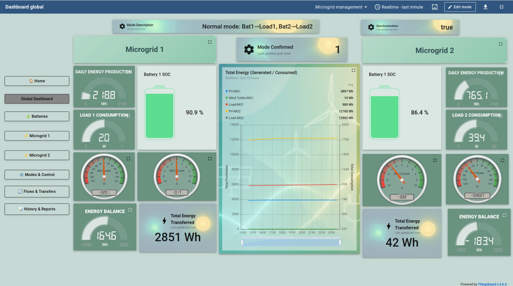
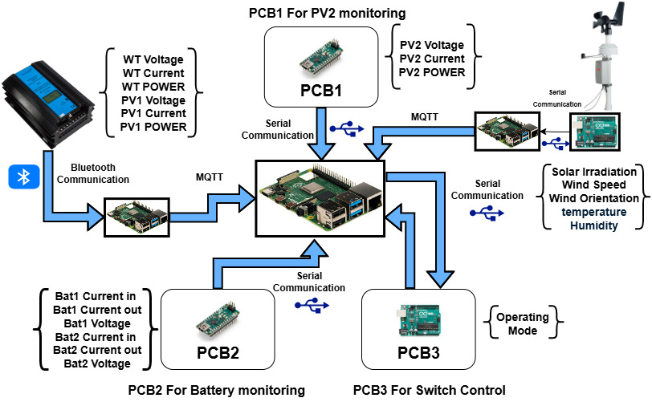
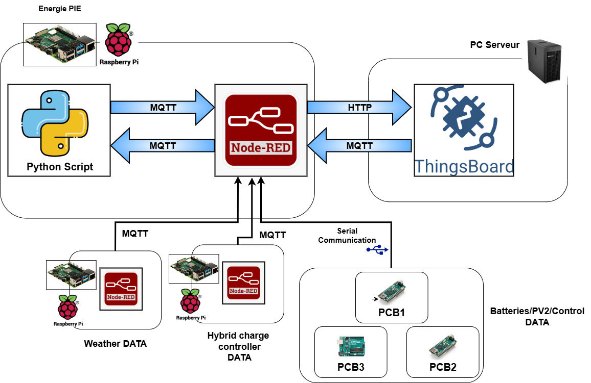
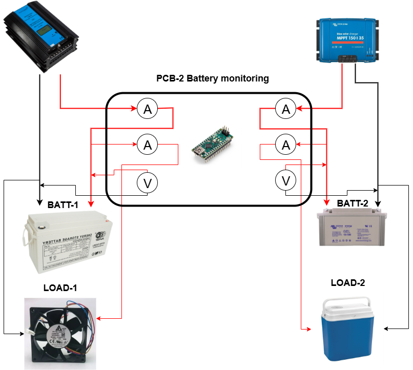
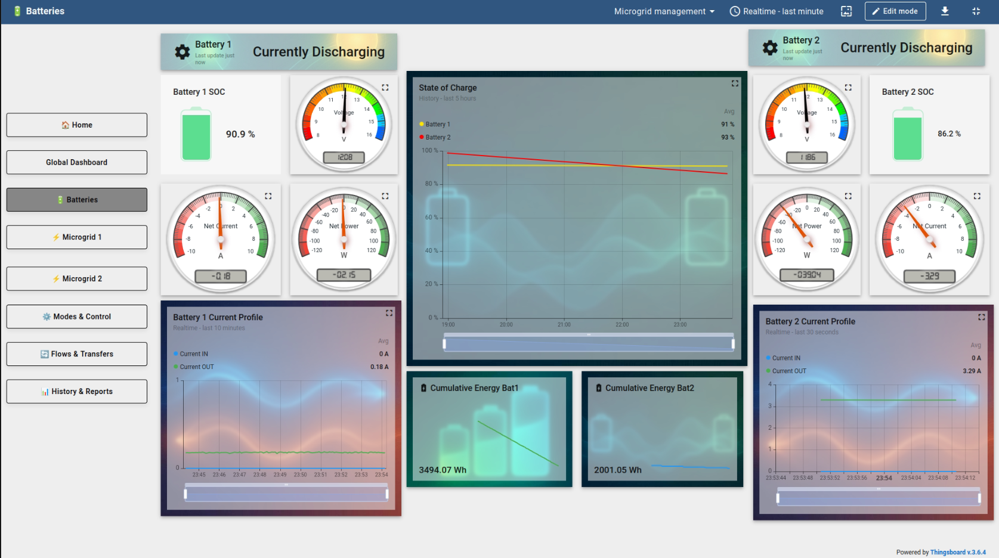
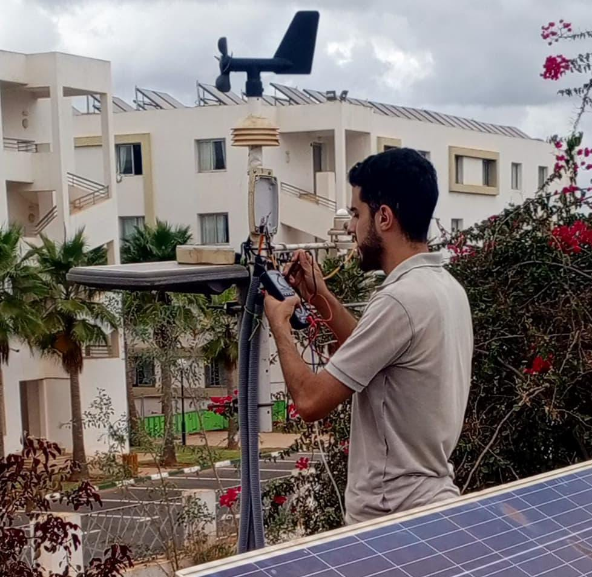
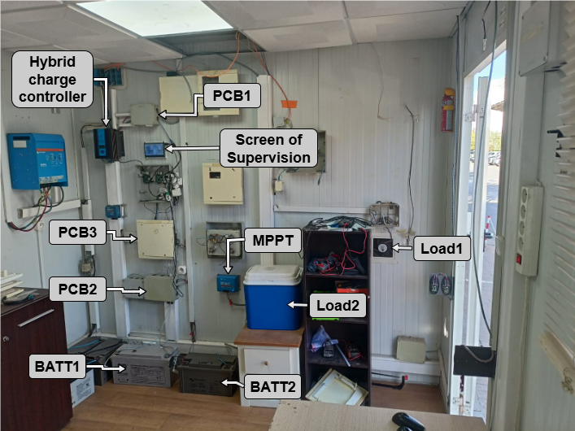

Stage de recherche appliquée — International University of Rabat, Laboratoire LERMA
Ce stage a été réalisé au Laboratoire LERMA de l'Université Internationale de Rabat (UIR), au sein de la plateforme Energy Efficient Building (EEB), dédiée aux systèmes intelligents et à la transition énergétique. L'objectif était de concevoir un système complet de supervision et de gestion automatique de l'énergie entre deux microgrids hybrides interconnectés (solaire, éolien, batteries), avec basculement automatique basé sur l'état de charge (SOC) des batteries.
Trois cartes électroniques personnalisées ont été conçues et développées :
Circuit de mesure de tension et de courant dédié au second panneau photovoltaïque
4 capteurs de courant (entrée/sortie) + 2 capteurs de tension pour les batteries 1 et 2
Circuit pilotant 7 relais via Arduino UNO pour le basculement entre microgrids
Raspberry Pi — agrégation des données des 3 PCB, calculs temps réel, logique de décision
Collecte des données PV1 / éolienne via Bluetooth depuis le contrôleur hybride
ThingsBoard — dashboards temps réel (production, SOC, transferts, historiques)
La chaîne de traitement repose sur trois couches : Node-RED orchestre l'acquisition (liaisons série Arduino, MQTT depuis le second Raspberry Pi, station météo) et l'envoi des télémetries vers ThingsBoard en HTTP ; des scripts Python exécutent en temps réel l'estimation du SOC, les bilans de puissance et la logique de basculement ; les commandes de retour (modes Auto/Manuel) transitent par MQTT (RPC) depuis ThingsBoard vers Node-RED puis vers la couche Python.
L'estimation du SOC combine deux méthodes selon l'état du système : comptage coulombmétrique lorsqu'un courant significatif circule, et estimation basée sur la tension à vide lors des phases de quasi-repos (plus de 5 minutes sans courant significatif) — une approche hybride qui améliore la robustesse de la mesure.
L'algorithme de basculement applique une logique à hystérésis (seuil haut 80 %, marge de 3 %) pour éviter les oscillations entre trois modes de fonctionnement : mode normal, Batterie 1 assiste le Microgrid 2, ou Batterie 2 assiste le Microgrid 1 — validé en fonctionnement automatique.
L'intégration matérielle et logicielle s'est révélée fonctionnelle : les résultats expérimentaux ont confirmé le bon comportement des chaînes PV, éolienne, et de la stratégie de commutation basée sur le SOC. Le système démontre la faisabilité d'une plateforme unifiée de supervision et de gestion intelligente pour microgrids hybrides interconnectés. Les perspectives identifiées portent sur l'intégration de prévisions météo dans l'algorithme de basculement, l'exploration de méthodes d'estimation SOC plus avancées (filtrage de Kalman, IA), et l'extension vers la gestion décentralisée des échanges d'énergie entre microgrids.






